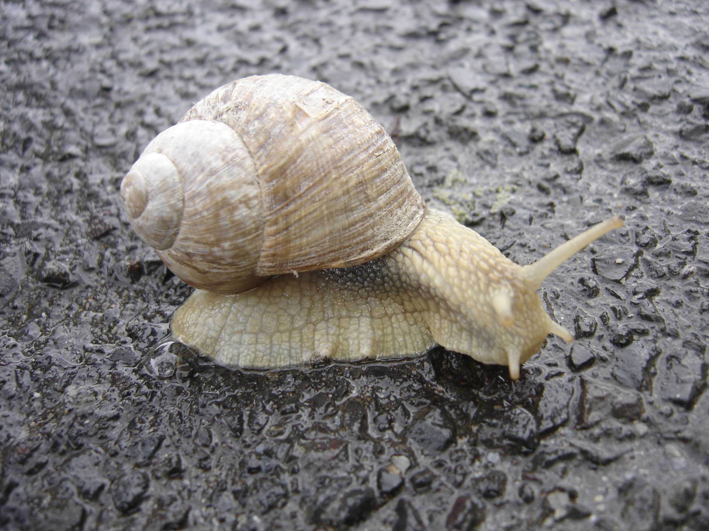

A snail is a shelled gastropod. The name is most often applied to land snails, terrestrial pulmonate gastropod molluscs. However, the common name snail is also used for most of the members of the molluscan class Gastropoda that have a coiled shell that is large enough for the animal to retract completely into. When the word "snail" is used in this most general sense, it includes not just land snails but also numerous species of sea snails and freshwater snails. Gastropods that naturally lack a shell, or have only an internal shell, are mostly called slugs, and land snails that have only a very small shell (that they cannot retract into) are sometimes called semi-slugs.